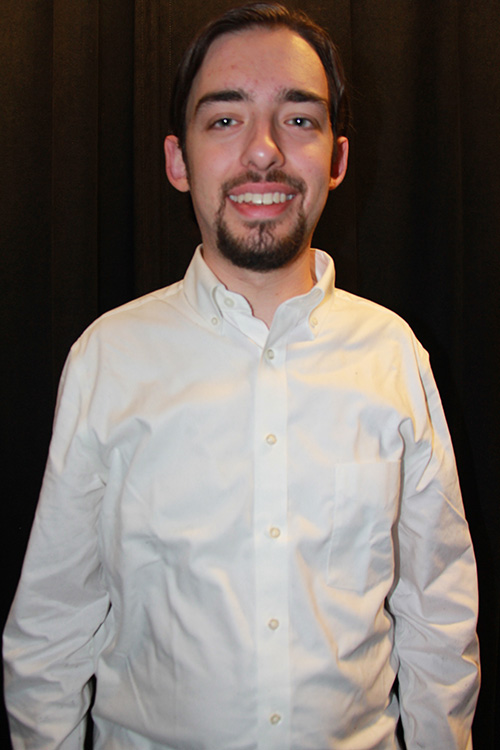
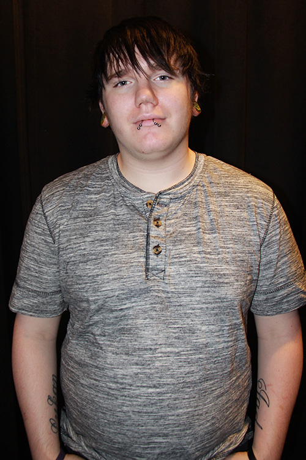

Maley is the Project Manager for Wide World Developers in Oakdale, PA. She is 19 years old and is from McDonald, Ohio. From a young age, Maley was interested in the website design and development field. She grew up with an aunt – one whom she highly respected – in said profession, and decided to try it out for herself. The rest is history. She doesn’t regret her choice at all.
Carla Karczewski
You can call her Carla or CJ. Carla is 29 years old from Beaver Falls, Pennsylvania. She is the Web Designer at Wide World Developers in Oakdale, Pa. Her work day consists of creative collaboration with team members and clients to create an optimum webpage for their company. Carla loves working on front end web development and web design. She was not familiar with coding until she started at PTC in 2009 as a Graphic Design major, and added on an additional web class for fun, and she’s been hooked ever since. Carla hopes to one day pursue a career as a UX Engineer and coordinate with designers and developers on worldwide projects. She has a Jack Russell named Mya who is 14 years old who is always there to assist her with talking through the code.

Dalton Orth
Dalton is the Wide World Developers’ lead developer. With extra experience in code, he handles the bulk of the HTML, JavaScript, SQL, and PHP, but also assists with design. He enjoys the feeling of success after solving a problem in code.

Jacob Babcock
Jacob is 21 years old and works as a co-designer and co-developer for the company World Wide Design. He has always been interested in designing and developing his own style of work from a young age. He dabbled in various forms of designing from painting and drawing, to creating his own style of poetry. Jacob had taught himself everything he knew until he decided to attend Pittsburgh Technical College in the year 2009. He attended Pittsburgh Technical for two years. Where he graduated among the top students in his class. Jacob specializes in designing and coding user interfaces used in various forms of media from websites, to programs, and lastly video games.